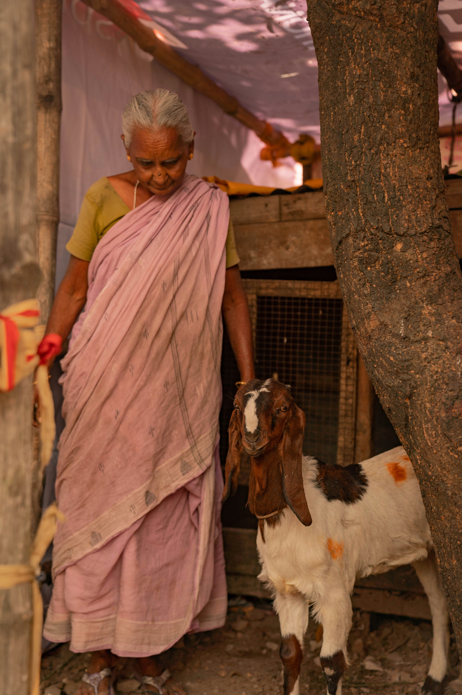
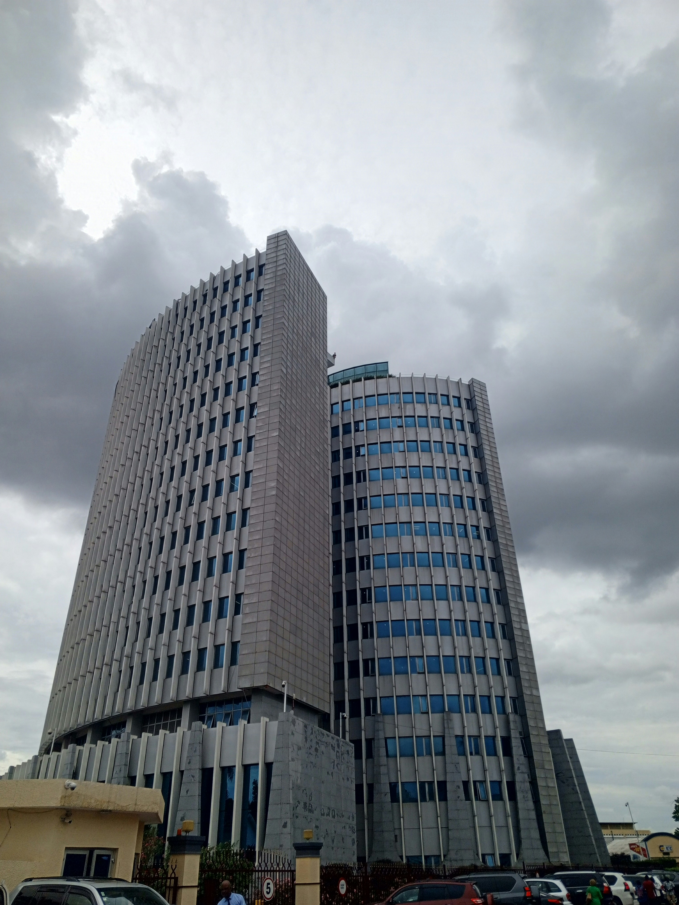

Sobre Nossa Organização

Quem Somos
A ONG Esperança Solidária é uma organização sem fins lucrativos fundada em 2010, dedicada a transformar vidas através de projetos sociais que promovem educação, saúde e desenvolvimento comunitário. Com mais de 13 anos de história, já impactamos positivamente mais de 50.000 pessoas em comunidades carentes.
Nossa Missão
Promover o desenvolvimento social e humano de comunidades em situação de vulnerabilidade, através de projetos educacionais, assistência social e programas de capacitação profissional, garantindo dignidade e oportunidades para todos.
Nossos Valores
- Solidariedade: Acreditamos no poder da união e do trabalho coletivo
- Transparência: Prestamos contas de todas as nossas ações e recursos
- Respeito: Valorizamos a dignidade e diversidade de cada indivíduo
- Compromisso: Dedicação integral às causas sociais que abraçamos
- Transformação: Buscamos mudanças reais e duradouras na sociedade
Nosso Impacto
Áreas de Atuação
Nossos projetos abrangem diversas áreas essenciais para o desenvolvimento humano e social:
- Educação infantil e reforço escolar
- Capacitação profissional para jovens e adultos
- Assistência alimentar e nutricional
- Programas de saúde preventiva
- Apoio a famílias em situação de vulnerabilidade
- Atividades culturais e esportivas
Informações de Contato
Endereço
Rua da Solidariedade, 1000
Bairro Esperança
Caxias do Sul - RS
CEP: 95000-000
Telefones
Geral: (54) 3220-1000
WhatsApp: (54) 99999-1000
Voluntariado: (54) 3220-1001
E-mails
Geral: contato@esperancasolidaria.org.br
Doações: doacoes@esperancasolidaria.org.br
Voluntariado: voluntarios@esperancasolidaria.org.br
Horário de Atendimento
Segunda a Sexta: 8h às 18h
Sábados: 9h às 13h
Domingos: Fechado
Redes Sociais
Acompanhe nossas ações e fique por dentro de todas as novidades:
- Facebook: /ONGEsperancaSolidaria
- Instagram: @esperancasolidaria
- Twitter: @ongsolidaria
- LinkedIn: /company/ong-esperanca-solidaria